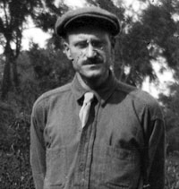
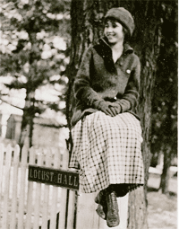
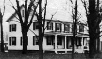
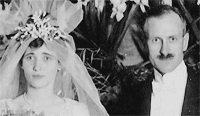
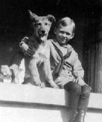
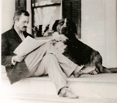
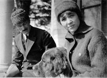
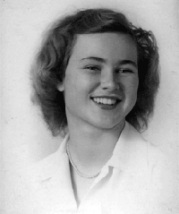
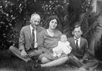

|
Murray Archibald Campbell Murray Archibald Campbell was born in Mt. Vernon, New York, on December 1, 1881. |
|
|
Important
Facts
|
||
| December 1, 1881 | Born in Mt. Vernon, New York on December 1, 1881, Murray Archibald Campbell was the first of two sons of Dr. Archibald Murray Campbell and Emma Anne Cuthell. Source: 1900 United States Federal Census Record. |
|
| 1893 | When Murray was about 12 years old he caught diphtheria, which caused him to go deaf. Source: Joan Campbell Recollections. | |
| October 14, 1897 | At age 16, Murray wrote to his mother when he was away at school and talked about his lessons: Latin, English, Physics, and Algebra. Source: Letter from Murray Campbell. | |
| June 4, 1900 | Murray is listed in the 1900 Federal Census as Murray Campbell (19) along with the rest of his family: Archibald Campbell (57), Emma A. Campbell (49), Arch B. Campbell (9), and Mary Campbell (23). Source: 1900 Census, Mount Vernon Ward 3, Westchester, New York; Roll: T623 1175; Page: 3B; Enumeration District: 85. | |
| Sept. 22, 1900 | Murray received progress reports from Gallaudet College faculty, which included a poor report regarding a reexamination in Rhetoric. Source: Gallaudet College examination report. | |
| November 2-14, 1900 | His mother and father wrote several letters to Murray while he was at Gallaudet College in Washington D.C. In one letter she talked about the campaign to re-elect President William McKinley who ran against William Jennings Bryan. In another letter from his mother, she suggested that Murray read the book: A Sailor's Log, which is about Rear Admiral Robley D.Evans's 40 years of Navy life - from the Civil War to the Spanish American War. In his father's letter, from 36 South First Avenue, Mount Vernon, he talked about school life and suggested that Murray participate more in school debates, etc. Source: Letter from his mother Emma Campbell and his father. |
|
| Feb. 10, Dec. 8, 1901 | In February, Murray's father wrote him a letter that talked about attending college and a recent hazing by the deaf and dumb at another college near by. In December, his father talked about writing weekly and about his return trip for his x-mas vacation. Source: Letters by Archibald M. Campbell at 36 First Ave. Mount Vernon, NY to Murray Campbell at Gallaudet College in Washington D.C. |
|
| June 18, 1902 | Murray graduated with a Master of Arts degree from the Gallaudet College in Washington D.C. His certificate was signed by Theodore Roosevelt. Source: Gallaudet College diploma. | |
| Dec. 26, 1902 | Murray's mother, Emma Anne Cuthell died in Mount Vernon, NY. She was buried at the Woodlawn Cemetery. Her obituary said that she died of pneumonia. Source: New York Times, ProQuest Historical Newspapers; and First Methodist Episcopal Church, Mount Vernon, New York. | |
| December 28, 1902 | His father wrote Murray a letter two days after his mother died. He said " You have lost a mother whose devotion and affection for a son could not be equaled." Source: Letter by Archibald M. Campbell to Murray Campbell. | |
| July 6, 1903 | Briggs Rodman wrote Murray several letters talking about their College days. Source: Letters from Briggs Rodman to Murray Campbell addressed to: 36 South First Ave, Mount Vernon, NY. | |
| 1904-1909 | Murray was an employee of the Mount Vernon Trust Company from January 1904 to August 1909, during which time he filled various positions such as pass book clerk, corresponding clert, and bookeeper. Source: Letter from the Mount Vernon Trust Co. | |
| August 26, 1904 | Murray attended his first Gallaudet College reunion at a fellow alumni's house in St. Louis. Source: Newspaper clipping. | |
| December 6, 1904 | Murray received a letter from Mss. Perl Herdman regarding mutual friends and a school picnic. Source: Letter from Perl Herdman to Murray Campbell. | |
| Jan 19, 1908 | Murray received another letter from Mss. Perl Herdman thanking him for some pictures and his letter. Source: Letter from Perl Herdman to Murray Campbell. | |
| April 21, 1910 | Murray is listed in the 1910 Federal Census as Murray Campbell (28) along with his father Archibald M. Campbell (67) and two servants, Bridget Tenney (32) and Norah Lowery (30). Source: 1910 Census, Mount Vernon Ward 3, Westchester, New York; Roll: T624 1089; Page: 6A; Enumeration District: 64, Image 768. | |
| May 10, 1910 | Murray wrote a letter from 36 First Ave. Mt. Vernon, NY to his friend from college and said he was in between jobs but had worked for a company doing their books for about three months. Source: Letter by Murray Campbell to his friend Steidmann. | |
| Feb. 23, Oct. 1912 | In 1912, Murray wrote many letters to his father and close friends. In February, Murray wrote a letter from Mt. Vernon, NY, to his friend Will and talked about going out with girlfriends they both knew. In May, Murray wrote a letter from Mt. Vernon to his friend Taylor and talked about going to Cornell University in July to take a summer course in the principles of agriculture. In July, Murray wrote to his father from Ithaca, NY and said that he took a room at the YMCA for $3.00 a week. He talked about taking some classes on farming. Later in July, he wrote a six page typed letter to his friend Will talking about pursuing his farming interest and for his friend to visit or think about farming as a career. In August, he wrote his father saying he was not sure what he was planning to do for work. He was either going to work for a fruit farmer or on a poultry farm. In September, Murray wrote a letter from Rochester N. Y. to his friend Will and talked about common friends and looking for work. Then, in October, Murray wrote from Kendall N. Y. to his father and friend Will and talked about having a job working on a farm picking, sorting, and packing pears, peaches, quinces and apples. Source: Letters from Murray Campbell to his father, Archibald M. Campbell and his friends Will and Taylor. |
|
| Feb. 19, Nov. 25, 1913 | In February, Murray wrote several letters from Ithaca, NY to his friend, Mr. Van Allen and said that he had just bought a typewriter and had been attending Farmers' Week, attending lectures about the "Independent Farmer." His also wrote a letter to another friend named Steidman. In the letter to Steidman, Murray talked about working as a hired hand on three farms the previous summer. He said he is now taking a course at one of the colleges of Cornell University, learning "what a wondrous thing plain dirt is." Mr. Van Allen wrote back and talked about the difference between a gentleman farmer and the common farmer who most become. In March, Mr. Van Allen wore to thank Murray for his last letter and to talk about his philosophy on life, which was to take what life has to offer and to give it your best effort. His father wrote Murray a letter on Mount Vernon Trust Co. stationary, giving advice on Murray's farming venture and to take care of a recent cold Murray had gotten. In September, Mr. Van Allen wrote back and gave the advice that the best way to make a start on the farm is to just begin. In November, Murray wrote again to Mr. Van Allen. In this letter he talked about farming and how important the soil is. He said that he is looking at a 100 acre farm near Poughkeepsie, New York. Source: Letters to and from Mr. Van Allen and to Steidman; Letter from Murray Campbell's father. |  Murray at Locust Hall Farm |
| February 8, 1914 | In February, Murray wrote a letter from Mt. Vernon, NY to his friend, Mr. Van Allen and said he had purchased a 106 acre farm for $17,000, called Locust Hill Farm, near Vassar College, about 4 1/2 miles from Poughkeepsie, N. Y. His intent was to be a scientific farmer. Source: Letter from Murray to Mr. Van Allen, Feb. 8, 1914. |
1916 - Locust Hall Farm |
| March - Nov. 12, 1914 | In March, Murray wrote two letters to his father from Poughkeepsie and said that he was very busy getting the farm ready for ploughing in April. The farm already had about 77 trees. Murray talked about planting peaches, quinces, apples, pears, cherries, and plum trees. In September, Murray wrote to his father to say that he was having troubles with some of the hired hands and talked about the county fair. In November, Murray's father wrote his son a letter on 36 First Avenue, Mount Vernon, N. y. stationary, that talked about a recent visit to the farm and his observations and well wishes. Murray answered the letter and wrote that the choice of farming as an occupation was a last resort in lieu of several years of preparation in another field. He also responded to his father's question about getting married someday. Source: Letters by Murray Campbell and Archibald Campbell. |
 Agnes Jean Cox at Locust Hall Farm |
| July 31, 1915 | Murray's father wrote his son a letter on Mount Vernon Trust Company personal stationary. He talked about his last visit to the farm and how he noticed Murray's lack of attention to details and gave several examples. Source: Letter by Murray's father, Archibald Campbell. | |
| January 1-12, 1917 | Agnes J. Cox went with a group of other girls to Murray's farm for a New Years weekend party. They drew boots dancing and wrote "at last at last!" beside her name. Murray proposed to her that night, on New Years Eve. After the New Years party, Murray wrote Agnes three letters in January. He thanked her for the oranges she sent, talked about pictures they had taken, and the next time they would meet. Source: Letters to Agnes J. Cox from Murray Campbell. |
 Campbell Home |
| March 5 - March 20, 1917 | Murray wrote a letter to Jean Cox, saying how he wanted to write her mother a long letter. Murray, then wrote a letter to Mrs. Jessie M. Cox asking for consent to marry her daughter. Mrs. Cox wrote back on March 29th asking them to both take plenty of time to consider everything and to be careful. Source: Letters by Murray Campbell to Agnes J. Cox and Jessie M. Cox. |
 Wedding at St. James Pro-Cathedral, Fresno, CA, 1917 |
| June 20, 1917 | Arch. M. Campbell wrote Jean a letter to say how sorry he was about not being able to come to the wedding. He wished his "daughter to be" a "hearty welcome to our family and pray that your fondest expectations may be realized." Source: Letter to Agnes from Archibald Campbell. | |
| June 23, 1917 | Murray married Agnes Jean Cox in Fresno, California. | |
| February 17, 1918 | John Hamilton Cuthell Campbell was born in New York City. Source: 1920 US Census, Tucson, Arizona. |  John H. C. Campbell |
| Sept. 12, 1918 | At age 36, Murray Campbell signed a draft card in Fresno, California. He is listed as having blue eyes and gray hair. Source: World War I Draft Registration Cards, 1917-1918 Record. | |
| 1918 | They moved to Tucson, Arizona to help Murray recover from being sick. Tucson had clean air and the sun and Agnes' father, Cary S. Cox, had a Hotel there. Murray worked as a bookkeeper for a Bank. Source: Joan Campbell recollections | |
| March - Dec. 1919 | Jean and Murray's father wrote letters to Murray at the Hotel Lewis in Tucson, Arizona. Source: Letters from Archibald M. Campbell and Jean Campbell. | |
| January 9, 1920 | US Federal Census lists Murran [Murray] Campbell (38), Agnes J. (29), John HC (2), boarders at the Hotel Lewis in Tucson, Arizona. Source: Tucson Ward 2, Pima, Arizona; Roll: T625_50; Page: 7A; Enumeration District: 103; Image: 1054. | |
| January 20, 1920 | His father wrote Jean a letter, which was addressed to Mrs. Murray Campbell at at 1248 R. St., Fresno, California. In this letter he talked about his daughter Mary Louise Campbell and how she was in boarding school in New York. Source: Letter from Archibald M. Campbell to Jean Campbell. |  Murray Archibald Campbell |
| April 24, 1920 | His father wrote Murray a letter, which was addressed to Murray Campbell at at the Hotel Lewis in Tucson, Arizona. In this letter he talked about a recent operation on his neck, a name for Murray's next child, and Murray's future career endeavors. Source: Letter from Archibald M. Campbell to Murray Campbell. |
|
| August 8, 1920 | Peter Campbell was born. Lived for only 5 months and died in Tucson, Arizona. Dr. Campbell wrote his son on August 20, 1920 letting Murray know how sorry he was to hear the news. Source: Arizona State Board of Health Certificate of Death. | |
| April 27, 1921 | Murray wrote Jean a letter from the Arizona National Bank in Tucson, Arizona. In this letter he talked about working as a bookkeeper at the bank and how he missed them. Source: Letter from Murray Campbell to Jean Campbell. |  Murray and Jean Campbell |
| September ?, 1922 | Douglas Campbell was born and died in childbirth in Fresno, California. He was delivered by her uncle, Dr. Lawrence Maupin. Source: Joan Campbell recollections | |
| Sept. 5 - Dec. 12, 1922 | Murray's father wrote Jean and Murray a letter saying "Murray's letter has just come to hand in which he tells me of the sad lose which has come to you. How your fondest hopes has been dashed away. It is hard to understand the mystery of life..." In November, Murray wrote a letter to his father and talked about living in Oakland with his wife Jean and their son John who was in Kindergarten. Murray talked about the problems they were having since moving out West. His father wrote back on Nov. 22nd and Nov. 28th, giving him advice on not building a house but buying one at interest and suggested that he stay in California to pursue his goals. In December, Murray's father wrote a letter to Murray and Jean saying that he wanted to send Jean a check for her to buy a Christmas present for John. He also mentioned the value of friendship and hoped that Murray would have more friends as "it would add so much to the comfort of your life." Murray wrote his father back saying that he had bought a small house at 2302 Carleton St., Berkeley for $6,000 and was looking for work; had two or three prospect he was perusing. Source: Letter from Archibald M. Campbell to Mrs. Murray Campbell at 1248 R. Street, Fresno, California and letters from Murray Campbell and father Dr. Archibald M. Campbell. | |
| Jan. 4 - Aug. 23, 1923 | In January, Murray's father wrote about their recent move to Berkeley and buying a house. They moved to Berkeley because they had many deaf friends living there. The California school for the deaf, dumb, and blind was there at the time. In August, Murray's father wrote and asked about Jean's heath and wanted to know how much he owed on the Berkeley house. He also asked about Murray getting a nurse for John and if expected him to pay the bills. Source: Letter from his father Dr. Archibald M. Campbell to Murray Campbell sent to 2302 Carlton St. Berkeley, California. | |
| Jan 4 - Sept. 25, 1924 | Letters from Murray's father to Jean and Murray were written to the California Sanitarium in Belmont, California. These letters talk about Murray's heath, finances on the house in Berkeley and paying the Hospital bills. In January, his father wrote: "I fully realize life looks gloomy to you all but then remember that behind the darkest clouds the sun still shines and will some time again break through and give you some measure of relief." He also said that he was elected the Chairman of the Board of the Mount Vernon Trust Company. In February, Murray's father wrote him at the Lane Hospital in San Francisco. These letters talk about the change to Lane Hospital and Murray's health. He said that Murray needed to economize while staying there. "Why not use a safety razor and save the barber charges." In March, Murray wrote a letter to his father about leaving the Belmont hospital and coming to the San Francisco hospital but wanting to come home. He said that he only weighs 110 pounds and his teeth are in bad condition. His father wrote back asking him to be cautious about having any operations and incurring additional expenses. In July, Murray's father replied to Jean's letter and said he is helping Murray financially and would like to receive more news as to how things are. He wrote Murray to say that he had been writing to Jean since Murray's was unable to use his right hand and arm and was concerned over their financial matters. In August, Murray's father wrote to Murray saying how glad he was to hear that he was making progress toward improvement. Source: Letters from Archibald M. Campbell to Jean and Murray Campbell. | |
| Jan. 8, 1925 | His father wrote Murray a letter and said that "it is encouraging to learn that physically you are better, and more able to get about, and financially things have cleared up very much". The letter goes on to talk about setting up a trust fund, which would insure a modest living. Source: Letter from Archibald M. Campbell to Murray Campbell at 2302 Carleton St. Berkeley, California. | |
| April 1 - Dec. 28, 1926 | In January, Murray's father wrote Murray a letter talking about Murray's recent 200 mile trip, his son John, and recent payoff of the mortgage on his house. In April, Murray's father wrote him a letter asking about his finances and if he had a cook. In another letter he said that he had been laid up with Influenza, talked about Uncle Hamie being sick again, and complained about the cold spring they were having. Murray wrote his father a letter from their 2302 Carleton Street house in Berkeley and talked about his health and that Dr. Pierson said that he had peritonitis and wanted him to take Ultraviolet lamp treatments for a couple of weeks. He also wrote about remodeling the house to give them more living space. He wrote his father again on April 30th to say that he would like to stay in the house on Carleton Street but must make it more livable so that John, who has been living with Jean's mother (Mrs. Cox) can come live with them in the summer. He also talked about a visit from an old friend named Thomas. In May, Dr. Philip H. Pierson wrote Murray's father giving him a progress report on Murray's health. He said that Murray was making good progress during the last few months and talked about his stomach trouble as being due to his tuberculoses condition. Archie wrote Murray a letter in May, which described the events leading up to Uncle Hamie's (John Hamilton Cuthell) death including the funeral services. It also included two newspaper obituaries. Uncle Hamie died on May 8, 1926. In June, Murray's father wrote him a letter about his recent trip to the Pocono Mountains in Pennsylvania and that the Trust Company is planning to open a second branch. Murray wrote his father back and talked about his father's trip and Murray's recent visit with Dr. Pierson. Murray said his health was was better but decided not to have John live with them just yet because of his illness. Murray's brother Archie wrote Murray to talk about Thomas's recent visit to California to see Murray and Uncle Hami's estate. Murray wrote his brother Archie a letter in July from his Carleton Street house in Berkeley. The letter talked about some troubles he was having, his nerves, and how he needed a new car. He asked his brother about receiving "cash" from Uncle Hami's estate. In August, Muray wrote his father to say that he sold his Ford and bought a Chevrolet. He also talked about his son John and that he had started painting his house. Murray's father wrote back and said he was glad that Murray had started painting his house. He said that he was suprised Murray had bought a new car and he wished grandson John liked reading more. In October Murray wrote his father saying that the the Carleton Street house sale fell through because the other party learned that Murray had T.B. His father wrote back saying how he was disapointed and that he should reduce the price on the house if has to. In November, Murray wrote his brother Archie and said that they had moved into a new home on Oregon Street. In December, Murray's father wrote him a letter about putting in a lavatory basin and selling the Carleton Street house and not to refuse a fair offer. Murray wrote his brother about the pending sale of the Carleton Street house. His brother Archie sent back a Western Union Telegram advising him to sell the Carleton house with the buyer to assume the 1st mortgage and sell the 2nd mortgage. Murray wrote his father from their 2424 Oregon Street house in Berkeley saying that they had sold the house on Carleton Street and that "the sale came just in time to perfect the happiest Christmas we have had for a long time. This is the first we have been able to spend together at home for eight years. Freed from these anxieties and with John safely with us again, the New Year looks much brighter for us." Source: Letters from Murray, Archibald, and Archie Campbell. Telegram from Archie to Murray Campbell, sent to 2424 Oregon St. Berkeley, California. |
|
| Jan. 4 - Dec. 9, 1927 | Murray's father wrote in early January to acknowledge a December letter and to ask Murray about the sale of the Carlton Street house and mortgage on the Oregon Street house. Murray wrote his father several letters from the 2424 Oregon Street address in Berkeley and said that he was having trouble with the buyer on the Carlton Street house and that the agent was unable to sell the 2nd mortgage at a 20% discount. Murray wrote his brother Archie and his father on January 28th and asked for some advice regarding the Carlton Street house. He told his father that he hired a lawyer to resolve the situation. Archie, wrote him a letter about the possibility of having to foreclose if the party that bought the Carlton Street house fails to meet the monthly payment. He also suggested getting a lawyer to look after the details. His father wrote a letter on Jan. 27th to send Murray some money and ask for a report of his expenditures and liabilities up to the end of January. In February, Murray's father wrote several letters to him asking Murray to write back and answer some questions about his house loans. Murray wrote back to his father and talked about his improved health and about the loans that were on the Oregon Street house and the pending sale of the Carlton house. He also said there has been a lot of rain for this time of the year, which has kept him indoors. In March, Murray wrote his father and said that he read in the Tribune that Archie had gone off to Florida and the Bahamas on vacation. Archie wrote in May giving his brother some family news and talked about their summer plans at Lake Placid. In June, Murray wrote Archie a letter, which talked about sending John to YMCA camp and the fact that he was "clear of debt for the first time in years." He also mentioned that Jean's mother had gotten involved with some "crooks" who took her cash and notes. They had to hire lawyers to get most of the money back. Then, in September, Archie wrote Murray a letter and talked about helping to send John to camp and about the inheritance tax on Murray's trust fund. In December, Archie wrote Murray and spoke about being laid up for four days right during the busy season. Source: Letters from Murray, Archie, and his father. |
|
| Jan. 2 - July 29, 1928 | In January, Murray wrote his brother Archie a letter that talked about how busy they were for Christmas and how Jean only had time to finish making a bean-bag for their niece Jean Louise Campbell. Archie wrote Murray a letter on Genung's stationary and spoke about the health of their father. He said "Papa is not as alert as he was a couple of years ago." He also talked about his wife Helen and his daughter Jean. In April, Archie sent a Postal Telegraph to Murray, which said: "Papa has had a slight stroke, is recovering, letter follows." Archie's letter talked about how the stroke affected his right leg and his right hand but their father "is very cheerful and optimistic and philosophical. He has improved to talk again and to use his hand somewhat." In May, Archie wrote and said that "Papa is getting along nicely. He is walking around the block each clear day and is improving steadily." He also enclosed a check for John to use for summer camp. In June Archie wrote two letters to Murray, giving him an update on their father's health and telling Murray about the opening of a new building for the Mt. Vernon Trust Company. Archie describes their father's new office at the Mt. Vernon bank. His wife, Jean also wrote Murray a letter in June from the New Sargent Hotel in Portland Oregon. She was traveling with some friends and their son John to Portland, Vancouver and Seattle. They stayed in "auto camps" along the way. She also sent Murray post cards from her trip. One post card had a picture of Mt. Shasta. Source: Letters to and from Archibald Bush Campbell. Letters from Jean Campbell to her husband Murray Campbell. |
|
| March 30, 1929 | Muriel Joan Campbell was born at the Alta Bates Community Hospital in Berkeley, California. Source: California Birth Index, 1905-1995. |  Muriel Joan Campbell |
| April 2, 1930 | The US Federal Census lists Murray Campbell (48), Agnes J. (39), John HC (11), and Muriel J. (1), living in Berkeley, Alameda, California. Source: 1930; Census Place: Berkeley, Alameda, California; Roll: 110; Page: 1A; Enumeration District: 289; Image: 1118.0. | |
| August 31, 1930 | His father, Archibald Murray Campbell died in Mt. Vernon, New York. The New York Times wrote: "DR. CAMPBELL DEAD IN MT. VERNON HOME. Leading Westchester Physician and Surgeon was 86 years old. Bank president for 21 years. He had been head of county and local medical groups and practiced more than half century." Source: New York Times; Sep 2, 1930; ProQuest Historical Newspapers The New York Times pg. 21. | |
| August 6, 1931 | At age 49, Murray died in Berkeley, California of pneumonia, although he was very debilitated by tuberculosis. Source: Conversation with Joan Campbell. |
 The Campbell FamilyJune 1929 |
| August 8, 1931 | He was cremated at the Mt. View Cemetery, Berkeley, CA. Source: Conversation with Joan Campbell. | |
| August 20, 1976 | When his wife, Agnes Jean Campbell died, Murray and Agnes's ashes were sprinkled by a bridge in Yosemite National Park. Source: Conversation with Joan Campbell in 2006. |